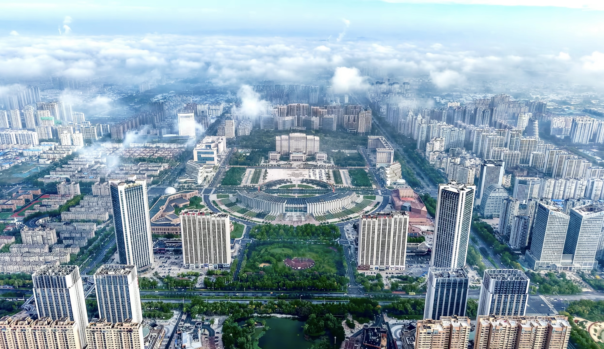
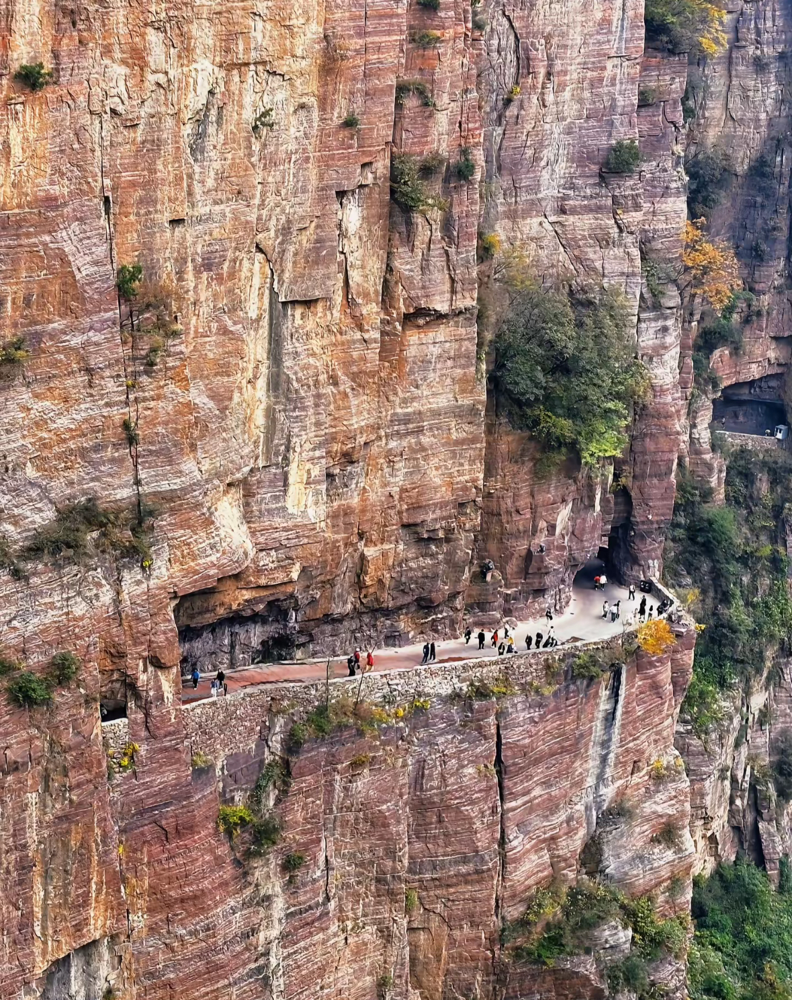
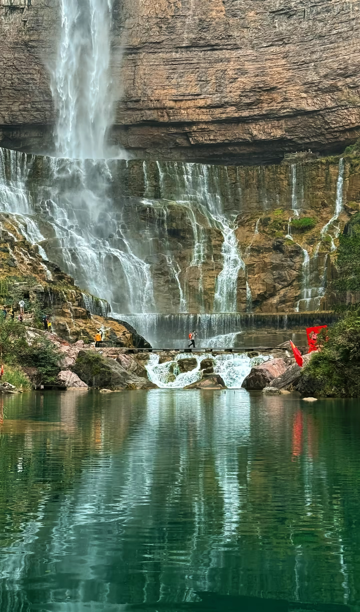
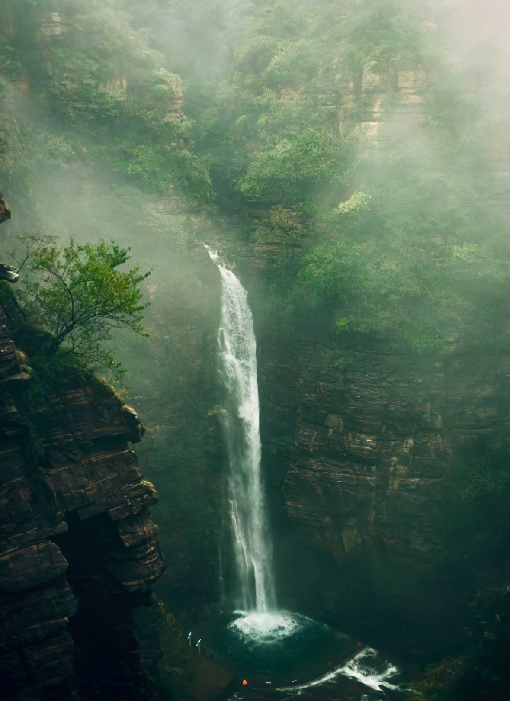
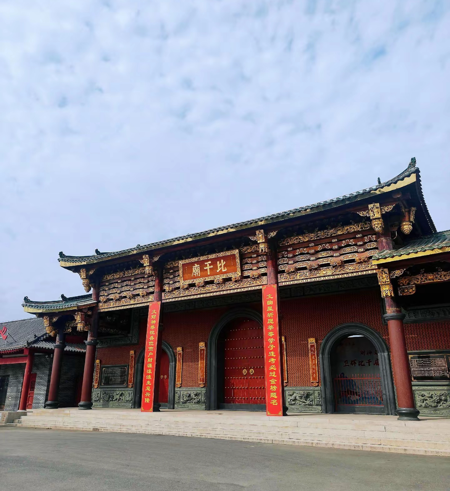
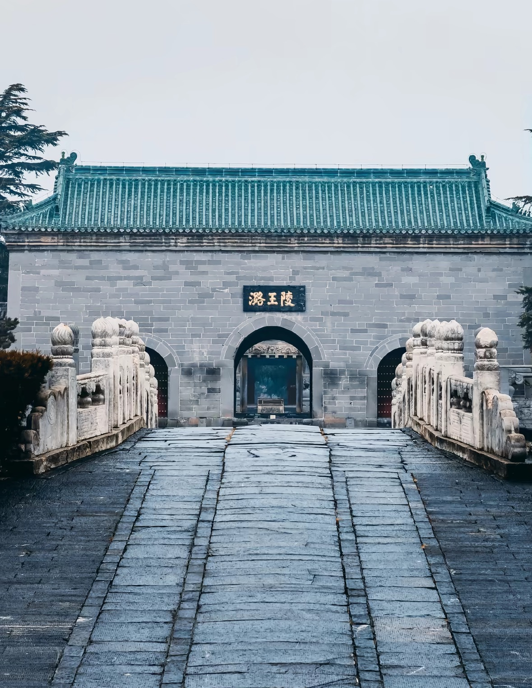
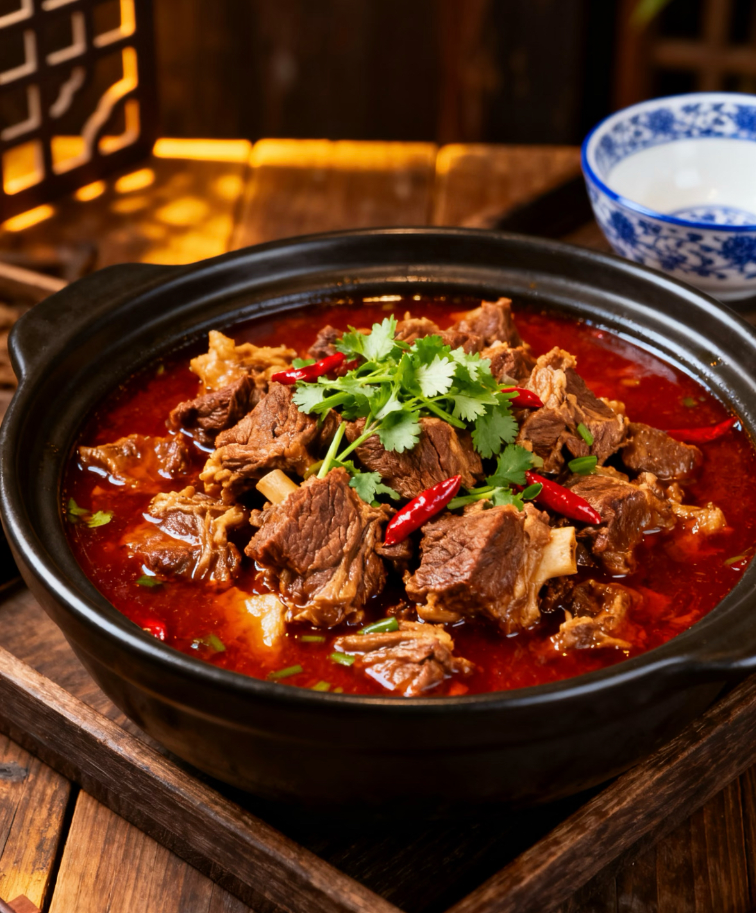
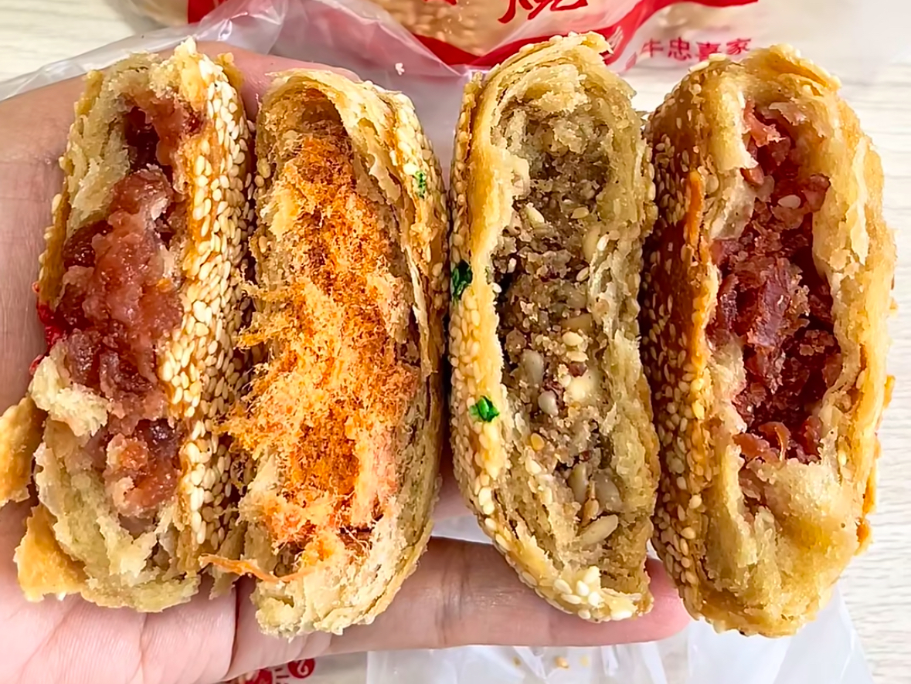
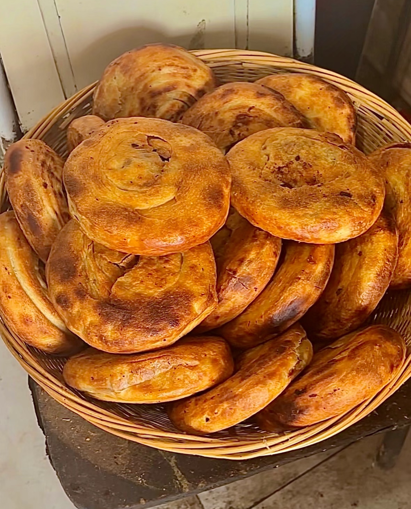
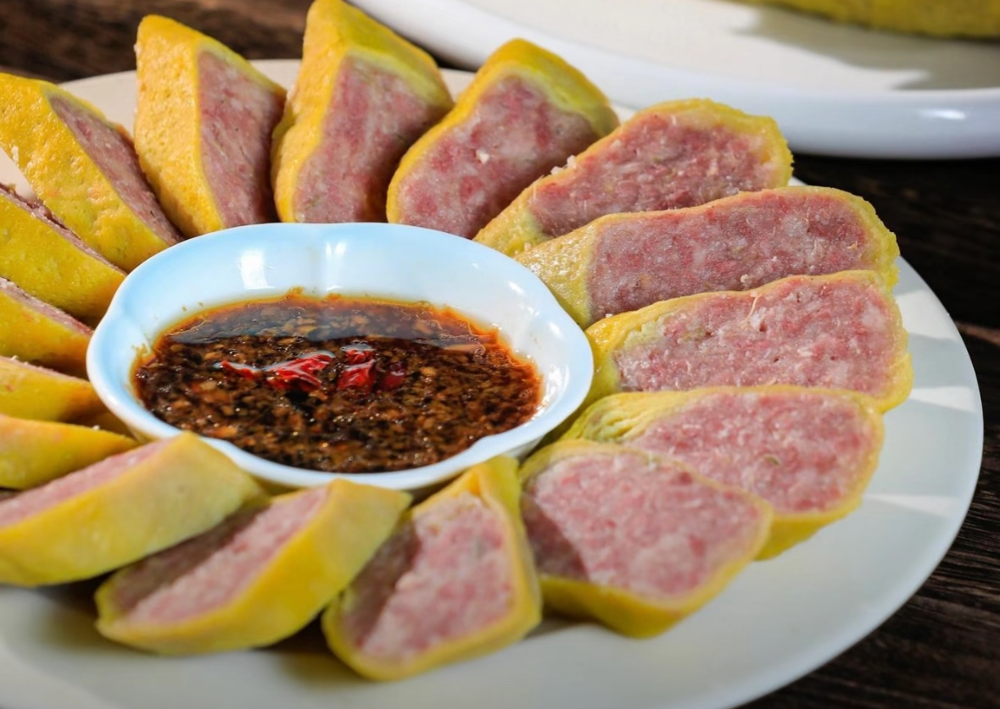

Get to know Xinxiang from here

Xinxiang is located in the north of Henan Province, facing the Yellow River to the south and leaning against the Taihang Mountains to the north. It was known as Muye in ancient times and is an important industrial city, transportation hub and cultural city in the Central Plains region.
As a famous historical and cultural city, Xinxiang has a long cultural heritage and magnificent Taihang mountain and water resources, making it a city with both historical heritage and natural scenery.
From the ancient loyal minister Bigan to the modern Taihang miracle, Xinxiang has always written its own city story with dignity and perseverance.
Magnificent Taihang, landscape Xinxiang

Also known as the "Cliff Corridor", it was chiseled by 13 villagers of Guoliang Village with simple tools in the 1970s, hanging on the thousand-foot cliff. It is praised as "the Ninth Wonder of the World" and "the Road of Heroes". The narrow passage, steep rock walls and shocking view outside the cliff make people marvel at the perseverance and courage of the mountain people. Walking through it is like walking in a magical gallery between mountains and clouds.

Known as "the Jiangnan of North China" and "the Soul of Taihang", Baligou is famous for its clear waters, waterfalls and green mountains. The scenic area gathers streams, pools, waterfalls and strange peaks, with dense forests and fresh air. In summer, the temperature is pleasant, making it an ideal summer resort. The winding mountain paths, gurgling streams and cascading waterfalls constitute a quiet and beautiful picture, allowing tourists to stay away from the hustle and bustle and return to nature.

As a famous national geological park and a paradise for sketching and hiking, Wanxian Mountain is famous for its magnificent canyons, strange stone peaks and primitive natural scenery. The mountain is steep, the forest is dense, and the clouds are lingering all the year round. There are not only spectacular natural landscapes such as cliff plank roads and alpine meadows, but also rich folk customs. It is a favorite destination for photographers, painters and outdoor enthusiasts to appreciate the majestic momentum of Taihang Mountains.
Imprints of Xinxiang in the long river of history

The ancestral home of the Lin family worldwide, the temple of the loyal minister Bigan, preserves many ancient steles and buildings, showing the loyal culture and Chinese roots.

The largest existing Ming Dynasty vassal mausoleum in the Central Plains, known as the "Central Plains Dingling", with exquisite stone carvings and magnificent momentum.
Taste of Central Plains on the tip of the tongue

Xinxiang signature dish, tender meat, rich soup

Intangible cultural heritage, crispy and delicious

Crispy outside and tender inside, street classic

Egg skin wrapped meat, fresh and tender
Easy to travel in Xinxiang
High-speed rail access, convenient buses and taxis in the city, direct buses to scenic spots
Spring and autumn have the best climate, summer to escape the heat in Taihang, winter to enjoy snow scenery
Many hotels in the urban area, farmhouses in mountain areas to experience local customs
Large temperature difference in Taihang mountains, bring a coat; go to local old restaurants for food